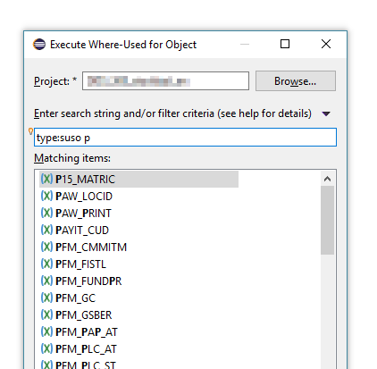

In addition to the delivered Search and analysis capabilities the
plugin additionally offers the following features
Executing Where-Used List from ABAP Quick Search Dialog
There are still some object types like e.g. Authorization
Object for which there is no ADT editor available. So executing a Where-List
for these objects is only possible if selected in an ADT editor like a
Class or from the project explorer.
For this purpose a new command is available via the main eclipse
toolbar.
Execute Where-Used Command
As it is a global command you can assign any free keyboard shortcut to
this command
After executing this command an
ABAP Quick Search Dialog opens where you can search for the
object, for which you want to execute a
Where-Used.

Execute Where-Used for ABAP Object